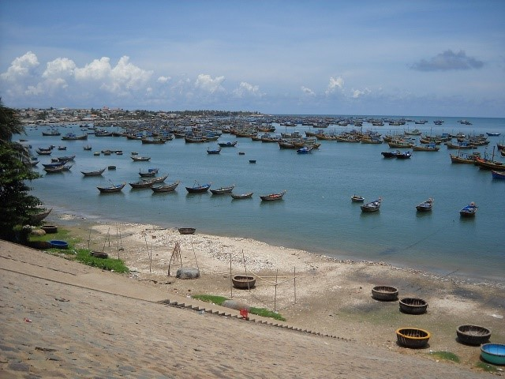

Thành phố Phan Thiết nổi tiếng với biển đẹp, đồi cát và hải sản
khí hậu nhiệt đới gió mùa khô hạn, với nắng nóng kéo dài quanh năm, ít mưa, gió nhiều. Điều này tạo điều kiện phát triển các hoạt động du lịch biển và nông nghiệp đặc trưng.
Phan Thiết-Bình Thuận nổi tiếng với các món ăn mang hương vị mặn mòi của biển cả và sự sáng tạo trong cách chế biến:
1. Gỏi hải sản thanh long
2. Răng mực
3. Bánh quai vạc (mỡ hành + tôm + ba rọi)
Phan Thiết-Bình Thuận có nhiều điểm đến nổi tiếng thu hút du khách, điển hình như:
1. Biển Mũi Né
2. Bàu Trắng - Bàu Sen
3. Núi Tà Cú
Bao gồm công trình văn hóa Chăm-pa, cá lễ hội và làng nghề đậm đà bản sắc dân tộc
1. Tháp Chăm Po Sah Inư
2. Lễ hội Dinh Thầy Thím (tháng 9 âm lịch)
3. Nghề làm gốm truyền thống của người Chăm
Con người Phan Thiết-Bình Thuận mộc mạc, chân chất, thân thiện và hiếu khách, năng động, chịu khó, gắn bó với biển cả, đồng ruộng, và các nghề truyền thống.